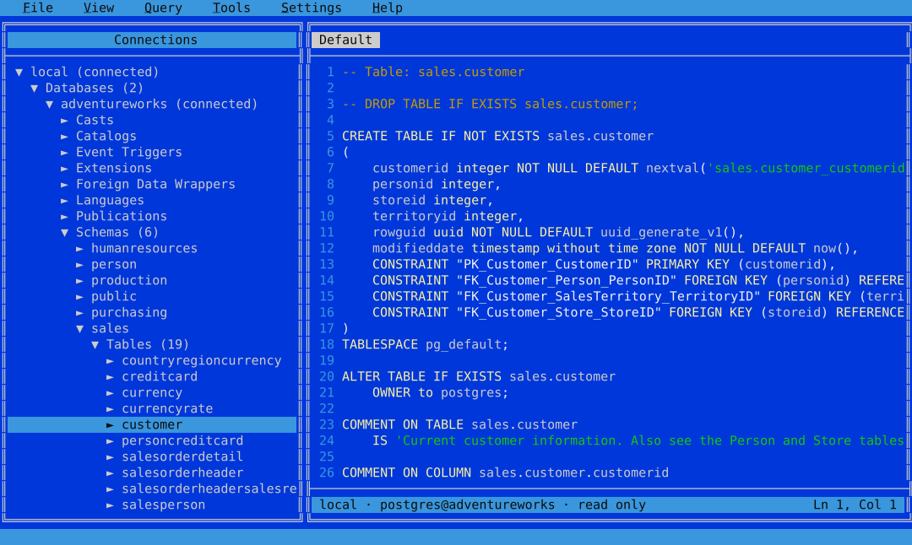
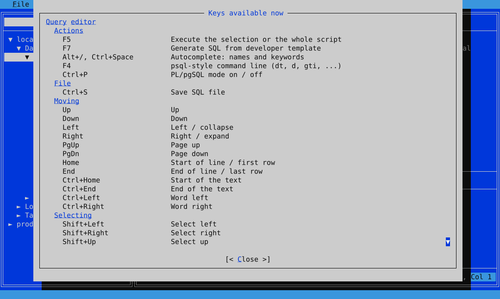
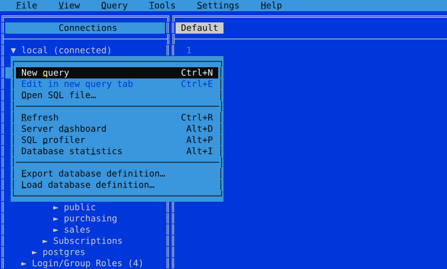

The window, menus and keys
Layout, focus, menus, dialogs and the mouse.
The parts of the window

| Part | Notes |
|---|---|
| Menu bar | F9. |
| Object tree (Connections) | Saved connections and the objects of the connected ones. See Object tree. |
| Tab status row (last row of the right frame) | The tab's session as connection · role@database, its state, the cursor position. |
| Window status line (bottom row) | Program messages, the reason a key did nothing, the quick-search text. |
There is no key-hint bar: F1 shows the keys.
The tabs of the right frame
| Tab | Opened with | Shows |
|---|---|---|
| Default | Always open | The definition of the tree row under the cursor. |
| Object tab | F3 in the tree | The definition of one object, pinned. |
| Query n – database | Ctrl+N | Query tab. |
| Dashboard: server | Alt+D in the tree | Server dashboard. |
| Profiler: server | Alt+P in the tree | SQL profiler. |
| Stats: server · database | Alt+I on a database | Database statistics. |
Focus
The focused part has its strip in the highlight colour: the tree's title, the active tab's name (upper part of the right frame), or the active label of the results bar.
| Key | Second key | Goes to |
|---|---|---|
| F6 | Ctrl+Tab | Tree ↔ right frame (the part used last). |
| Alt+1 | Ctrl+1 | The tree. |
| Alt+2 | Ctrl+2 | The right frame. |
| Alt+Down | Ctrl+Shift+Down | The lower part of the right frame (results, messages, statement pane); shown first if hidden. |
| Alt+Up | Ctrl+Shift+Up | The upper part (editor, list). |
- The Ctrl keys need a terminal that reports them (Windows console, kitty keyboard protocol).
- Tab never moves between the parts: it indents in the editor and moves between fields in dialogs.
Switching tabs
Alt+Left / Alt+Right switch the tabs nearest to the focus:
| Focus | Switches |
|---|---|
| Editor, definition, statement pane, profiler list | The main tabs. |
| Results or messages of a query tab | The result sets, then Messages. |
| The dashboard's list | The dashboard's lists. |
| The tree | Nothing; use / . |
Ctrl+W closes the active tab.
F1: the keys that work now

- Lists the keys of the focused part, then those that work everywhere. A key whose command cannot run at the moment is left out (Cancel only while a statement runs).
- All keys: or the Keyboard reference.
The same key in different parts
| Key | Object tree | Query tab | Dashboard / profiler / statistics |
|---|---|---|---|
| Ctrl+R | Refresh the tree | Show / hide the results | Show / hide the statement pane |
| Ctrl+F | Find an object | Find / replace | Profiler: filter |
| Ctrl+S | Quick search | Save the SQL file | |
| Ctrl+P | Open the SQL profiler | PL/pgSQL mode on / off | Pause / resume |
| F5 | Execute | Refresh; profiler: start / stop | |
| F8 | Delete the saved connection | Ask AI for SQL | Dashboard: terminate the session |
| F3 | Object in a new tab | Find next |
Esc + digit instead of F-keys
As in Midnight Commander: Esc, then a digit within one second — Esc 1 … Esc 9 are F1 … F9, Esc 0 is F10. Without a digit Esc acts as plain Esc after that second.
Menus

- F9 opens the menu bar; Alt + letter opens one menu (Alt+Q = Query). In an open menu the underlined letter runs the item.
- The key shown beside an item is its key in the part of the window the focus came from.
- Items that cannot run now are disabled, e.g. the Query menu without an active query tab.
- Every item: Menu reference.
Context menus
F2 or a right click: the commands for the row under the cursor (tree, result grid, messages, dashboard and profiler lists).

Dialogs
| Key | What it does |
|---|---|
| Alt + letter | The field with that letter underlined. |
| Enter | The default button [< OK >]; on another button, that button; in a list, the row. |
| Ctrl+Enter | The default button from any field, also from a list or a multi-line box. Only where the terminal reports it (Windows, kitty protocol). |
| Esc, F10 | Cancel. |
In Yes / No questions the underlined letter of a button also works. A double click on a list row is Enter.
Drop-down lists (combo boxes)
- Closed: Enter / Space opens it; Left / Right change the value without opening.
- Open: Esc keeps the old value; Tab closes and moves on. In a list longer than its box, typing filters it.
Message and help windows
Long texts (key lists, licences, a whole dashboard row) open in a scrolling window; ▼ at the right
edge marks more below.
Mouse
Optional. Clicks, double clicks, right click (context menu) and the wheel work as expected. Less obvious:
- The
×of a tab closes it, with the same questions as Ctrl+W. - Drag the border between the tree and the tabs to resize the tree (remembered); drag the line above the results bar or a statement pane to resize it.
- pgtc captures the mouse. Hold Shift while dragging to use the terminal's own selection.